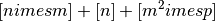
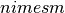
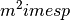
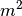

statsmodels.tsa.statespace.dynamic_factor.DynamicFactor.update¶
-
DynamicFactor.update(params, transformed=True, complex_step=False)[source]¶ Update the parameters of the model
Updates the representation matrices to fill in the new parameter values.
Parameters: params : array_like
Array of new parameters.
transformed : boolean, optional
Whether or not params is already transformed. If set to False, transform_params is called. Default is True..
Returns: params : array_like
Array of parameters.
Notes
Let n = k_endog, m = k_factors, and p = factor_order. Then the params vector has length . It is expanded in the following way:
- The first  parameters fill out the factor loading matrix, starting from the [0,0] entry and then proceeding along rows. These parameters are not modified in transform_params.
- The next parameters provide variances for the error_cov errors in the observation equation. They fill in the diagonal of the observation covariance matrix, and are constrained to be positive by transofrm_params.
- The next  parameters are used to create the p coefficient matrices for the vector autoregression describing the factor transition. They are transformed in transform_params to enforce stationarity of the VAR(p). They are placed so as to make the transition matrix a companion matrix for the VAR. In particular, we assume that the first  parameters fill the first coefficient matrix (starting at [0,0] and filling along rows), the second parameters fill the second matrix, etc.